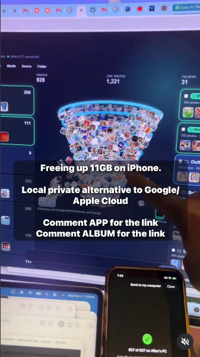

Instagram｜iPhone 照片備份硬碟與分類：產品名稱待確認
一句話摘要
@aitechproduct 示範 iOS 照片備份到硬碟並分類、釋放空間；原文未指明產品名稱，功能與隱私說法尚未實測。

畫面裁自下方原影片，非獨立測試或示意圖；著作權屬原權利人，重用授權未確認。
影片內容與查核邊界
原貼文發布於 2026-11-10，作者稱工具可按主題、類型、長寬比及地點自動整理照片，備份至硬碟，再透過 iOS app 從手機刪除以釋放空間；影片亦稱其為本機、私密的雲端替代方案。以上均是創作者宣稱，並未驗證備份完整性、分類準確度、離線運作、隱私或刪除行為；單一硬碟也不保證資料安全。
完整貼文引導留言 APP 取得連結，沒有明確產品名稱；檢視可見影片畫面及搜尋後仍無法可靠確認。相似功能或同作者其他影片的產品不代表就是此影片產品，因此不指認品牌、下載網址或售價。本次未留言索取連結、未登入或安裝，也沒有實際測試。
安全備份與刪除建議
- 先確認 app 的開發者、來源與照片權限，查看隱私政策及是否需要網路或雲端；先以少量非敏感照片試用。
- 備份後在另一台裝置或用其他軟體抽查實際檔案能否開啟，核對數量、原始畫質、影片、Live Photos 及中繼資料；再保留另一份獨立備份，避免硬碟故障造成唯一副本遺失。
- 確認可成功還原且明白刪除範圍後，才少量刪除測試。若啟用 iCloud 照片，從照片圖庫刪除可能同步刪除其他裝置及 iCloud 的相同照片；先確認同步狀態。留意「最近刪除」的保留期限，永久刪除後可能無法復原；不要把它當作長期備份。